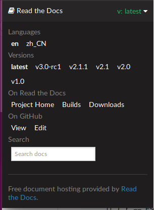

ESP-IDF ვერსიები¶
ESP-IDF GitHub-ის საცავი რეგულარულად განახლდება, განსაკუთრებით მასტერ ტოტი, სადაც ახალი განვითარება ხდება.
საწარმოო გამოყენებისთვის, ასევე ხელმისაწვდომია სტაბილური გამოშვებები.
რელიზები¶
მიმდინარე სტაბილური ვერსიის დოკუმენტაცია ყოველთვის შეგიძლიათ იხილოთ ამ URL-ზე:
https://docs.espressif.com/projects/esp-idf/en/stable/
უახლესი ვერსიის დოკუმენტაცია (master branch) ყოველთვის შეგიძლიათ იხილოთ ამ URL-ზე:
https://docs.espressif.com/projects/esp-idf/en/latest/
გამოშვებების სრული ისტორია შეგიძლიათ იხილოთ GitHub-ის საცავში გამოშვებების გვერდიიქ შეგიძლიათ იპოვოთ გამოშვების შენიშვნები, დოკუმენტაციის თითოეული ვერსიის ბმულები და თითოეული ვერსიის მიღების ინსტრუქციები.
ყველა ვერსიის დოკუმენტაციის მოსაძებნად კიდევ ერთი ადგილია დოკუმენტაციის გვერდი, სადაც შეგიძლიათ გადახვიდეთ ქვედა მარცხენა კუთხეში და დააწკაპუნოთ ვერსიების ჩამოსაშლელ ფანჯარაზე (ზოლი პატარა სამკუთხედით). ასევე შეგიძლიათ გამოიყენოთ ეს ჩამოსაშლელი ფანჯარა დოკუმენტაციის ვერსიებს შორის გადასართავად.
რომელი ვერსიით უნდა დავიწყო?¶
წარმოების მიზნებისთვის გამოიყენეთ მიმდინარე სტაბილური ვერსიასტაბილური ვერსიები ხელით იქნა გამოცდილი და განახლებულია „შეცდომების გამოსწორების რელიზებით“, რომლებიც ასწორებს შეცდომებს სხვა ფუნქციონალობის შეცვლის გარეშე (იხ. ვერსიონირების სქემა დამატებითი დეტალებისთვის).
ახალი ESP-IDF ვერსიების განახლებებს შორის დროის მაქსიმალურად გაზრდის მიზნით, გამოიყენეთ გრძელვადიანი მხარდაჭერის უახლესი სტაბილური ვერსია. ეს ვერსია შეგიძლიათ იხილოთ გამოშვებების გვერდი.
პროტოტიპების შესაქმნელად, ექსპერიმენტებისთვის ან ახალი ESP-IDF ფუნქციების შესამუშავებლად გამოიყენეთ უახლესი ვერსია (Git-ის მთავარი ფილიალი)მასტერ ფრონტის უახლეს ვერსიას აქვს ყველა უახლესი ფუნქცია და წარმატებით გაიარა ავტომატური ტესტირება, თუმცა სრულად ხელით არ არის გამოცდილი („გადამწყვეტი ზღვარი“).
თუ საჭირო ფუნქცია ჯერ არ არის ხელმისაწვდომი სტაბილურ ვერსიაში, მაგრამ არ გსურთ მთავარი განშტოების გამოყენება, შესაძლებელია წინასწარი გამოშვების ვერსიის ან გამოშვების განშტოების შემოწმება. რეკომენდებულია სტაბილური ვერსიიდან დაწყება და შემდეგ ინსტრუქციების შესრულება. განახლება წინასწარი გამოშვების ვერსიაზე ან განახლება გამოშვების ფილიალში.
იხილეთ ESP-IDF განახლება თუ უკვე გაქვთ ESP-IDF ის ლოკალური ასლი და გსურთ მისი განახლება.
ვერსიონირების სქემა¶
ESP-IDF გამოყენება სემანტიკური ვერსიონინგიეს ნიშნავს, რომ:
ძირითადი რელიზები, მაგალითად
v3.0, ახალი ფუნქციონალის დამატება და შესაძლოა ფუნქციონალურობის შეცვლა. ეს მოიცავს მოძველებული ფუნქციონალის მოხსნას.თუ განახლება ხდება ახალ მთავარ ვერსიაზე (მაგალითად,
v2.1რომv3.0), თქვენი პროექტის კოდის ნაწილი შეიძლება განახლებას და ფუნქციონალურობის ხელახალ ტესტირებას საჭიროებდეს. გამოშვების შენიშვნები გამოშვებების გვერდი ჩართეთ მნიშვნელოვანი ცვლილებების სიები, რომლებზეც მითითება იქნება შესაძლებელი.მცირე რელიზები, როგორიცაა
v3.1დაამატეთ ახალი ფუნქციონალი და გამოასწორეთ შეცდომები, მაგრამ არ შეცვლის ან წაშლის დოკუმენტირებულ ფუნქციონალს, ან არ შეიტანს შეუთავსებელ ცვლილებებს საჯარო API ში.თუ განახლება ხდება ახალ მცირე ვერსიაზე (მაგალითად,
v3.0რომv3.1), თქვენი პროექტის კოდი განახლებას არ საჭიროებს, მაგრამ თქვენ ხელახლა უნდა გამოსცადოთ თქვენი პროექტი. განსაკუთრებული ყურადღება მიაქციეთ გამოშვების შენიშვნებში მითითებულ პუნქტებს. გამოშვებების გვერდი.შეცდომების გამოსწორების გამოშვებები, როგორიცაა
v3.0.1მხოლოდ შეცდომების გამოსწორება და ახალი ფუნქციების დამატება არ შეიძლება.თუ განახლდება შეცდომების გამოსწორების ახალ ვერსიაზე (მაგალითად,
v3.0რომv3.0.1), თქვენ არ გჭირდებათ თქვენს პროექტში კოდის შეცვლა და მხოლოდ უნდა ხელახლა შეამოწმოთ ფუნქციონალობა, რომელიც პირდაპირ კავშირშია გამოშვების შენიშვნებში ჩამოთვლილ შეცდომებთან. გამოშვებების გვერდი.
მხარდაჭერის პერიოდები¶
ESP-IDF თითოეულ მთავარ და მცირე ვერსიას აქვს მხარდაჭერის შესაბამისი პერიოდი. ამ პერიოდის შემდეგ, გამოშვება ითვლება სიცოცხლის დასასრულად და აღარ არის მხარდაჭერილი. ზოგიერთ გამოშვებას ენიჭება გრძელვადიანი მხარდაჭერა, რაც ნიშნავს, რომ მხარდაჭერის პერიოდი უფრო ხანგრძლივია, ვიდრე სხვა გამოშვებების.
ის ESP-IDF მხარდაჭერის პერიოდის პოლიტიკა დეტალურად ხსნის ამას და აღწერს, თუ როგორ განისაზღვრება თითოეული ვერსიის მხარდაჭერის პერიოდები.
თითოეული გამოშვება გამოშვებების გვერდი შეიცავს ინფორმაციას კონკრეტული ვერსიის მხარდაჭერის პერიოდის შესახებ.
როგორც ზოგადი მითითება:
- გრძელვადიანი მხარდაჭერის ვერსიების გამოყენება მაქსიმალურად გაზრდის საჭირო ESP-IDF ძირითად ან მცირე განახლებებს შორის დროს.
- სტანდარტული სტაბილური ვერსიების გამოყენება მოითხოვს უფრო ხშირ განახლებებს ახალ ESP-IDF ვერსიებზე. თუმცა, ეს ნიშნავს, რომ ახალი ფუნქციები და მნიშვნელოვანი გაუმჯობესებები უფრო ხშირად იქნება ხელმისაწვდომი.
ასევე შესაძლებელია გრძელვადიანი მხარდაჭერის ვერსიიდან სტანდარტულ ვერსიაზე გადასვლა და პირიქით.
მიმდინარე ვერსიის შემოწმება¶
ლოკალური ESP-IDF ვერსიის შემოწმება შესაძლებელია idf.py-ის გამოყენებით:
idf.py --version
ESP-IDF ვერსია ასევე კომპილაცია არის პროგრამული უზრუნველყოფა ში d და მასზე წვდომა (სტრიქონის სახით) შესაძლებელია მაკროს საშუალებით. IDF_VERნაგულისხმევი ESP-IDF ჩამტვირთავი ჩატვირთვისას ვერსიას დაბეჭდავს (ვერსიის ინფორმაცია კოდში ყოველთვის არ განახლდება, ის მხოლოდ იმ შემთხვევაში იცვლება, თუ კონკრეტული საწყისი ფაილი ხელახლა გადამუშავდება კომპილაცია d).
თუ კოდი იწერება, რომელსაც სჭირდება ESP-IDF მრავალი ვერსიის მხარდაჭერა, ვერსიის შემოწმება შესაძლებელია კომპილაცია ზე, გამოყენებით კომპილაცია -დროიანი მაკროები.
ESP-IDF ვერსიების მაგალითები:
| ვერსიის სტრიქონი | მნიშვნელობა |
|---|---|
v3.2-dev-306-gbeb3611ca |
Master branch pre-release.
-
v3.2-dev - in development for version 3.2.-
306 - number of commits after v3.2 development started.-
beb3611ca - commit identifier. |
v3.0.2 |
სტაბილური გამოშვება, მონიშნული v3.0.2. |
v3.1-beta1-75-g346d6b0ea |
Beta version in development (on a გამოშვების ფილიალი).
-
v3.1-beta1 - pre-release tag.-
75 - number of commits after the pre-release beta tag was assigned.-
346d6b0ea - commit identifier. |
v3.0.1-dirty |
Stable release, tagged
v3.0.1.-
dirty means that there are modifications in the local ESP-IDF directory. |
Git-ის სამუშაო პროცესი¶
Espressif ESP-IDF გუნდის შემუშავების (Git) სამუშაო პროცესი შემდეგია:
- ახალი ნამუშევარი ყოველთვის პირველ რიგში ემატება მასტერ ტოტს (უახლეს ვერსიას). ESP-IDF ვერსია
masterყოველთვის მონიშნულია-dev(მაგალითად, „განვითარების პროცესში“)v3.1-dev. - ცვლილებები თავდაპირველად ემატება შიდა Git საცავს კოდის განხილვისა და ტესტირებისთვის, მაგრამ ავტომატური ტესტირების გავლის შემდეგ ისინი გადადის GitHub-ზე.
- როდესაც ახალი ვერსია (შემუშავებულია
master) ხდება ფუნქციებით სრულყოფილი და „ბეტა“ ხარისხის, გამოშვებისთვის იქმნება ახალი განშტოება, მაგალითადrelease/v3.1ასევე იქმნება წინასწარი გამოშვების თეგი, მაგალითადv3.1-beta1შეგიძლიათ სრული ნახვა ფილიალების სია და ა თეგების სია GitHub-ზე. ბეტა ვერსიების წინასწარ გამოშვებებს თან ახლავს გამოშვების შენიშვნები, რომლებიც შეიძლება მოიცავდეს ცნობილი პრობლემების მნიშვნელოვან რაოდენობას. - ბეტა ვერსიის ტესტირების პროგრესთან ერთად, შეცდომების გამოსწორება დაემატება ორივეს
masterbranch-სა და release branch-ს შორის. შესაძლოა, შემდეგი ვერსიისთვის ახალი ფუნქციები დაემატოს.masterამავე დროს. - ტესტირების თითქმის დასრულების შემდეგ, ახალი გამოშვების კანდიდატი მონიშნულია გამოშვების ტოტზე, მაგალითად
v3.1-rc1ეს ჯერ კიდევ წინასწარი გამოშვების ვერსიაა. - თუ სხვა მნიშვნელოვანი შეცდომები არ აღმოჩნდება ან არ შეინიშნება, მაშინ საბოლოო ძირითადი ან მცირე ვერსია მონიშნულია, მაგალითად
v3.1ეს ვერსია გამოჩნდება გამოშვებების გვერდი. - რადგან შეცდომები გამოშვებულ ვერსიებშიც გვხვდება, გამოსწორებები იმავე გამოშვების ფილიალში დარჩება.
- ჩვეულებრივი შეცდომების გამოსწორების ვერსიები იქმნება იმავე ვერსიის განშტოებიდან. ხელით ტესტირების დასრულების შემდეგ, შეცდომის გამოსწორების ვერსიას ენიჭება მონიშვნა (მაგ.
v3.1.1) და გამოჩნდება გამოშვებების გვერდი.
ESP-IDF განახლება¶
ESP-IDF განახლება დამოკიდებულია იმაზე, თუ რომელი ვერსიის/ვერსიების გამოყენება გსურთ:
- განახლება სტაბილურ ვერსიაზე რეკომენდებულია წარმოების გამოყენებისთვის.
- განახლება Master Branch-ზე რეკომენდებულია უახლესი ფუნქციებისთვის, განვითარებისთვის გამოყენებისა და ტესტირებისთვის.
- განახლება გამოშვების ფილიალში ეს არის კომპრომისი პირველ ორს შორის.
შენიშვნა
ეს სახელმძღვანელოები ვარაუდობენ, რომ თქვენ უკვე გაქვთ ESP-IDF ის ლოკალური ასლი კლონირებული. მის მისაღებად, შეამოწმეთ მე-2 ნაბიჯი დაწყება სახელმძღვანელო ნებისმიერი ESP-IDF ვერსიისთვის.
განახლება სტაბილურ ვერსიაზე¶
ახალ ESP-IDF ვერსიაზე განახლებისთვის (რეკომენდებულია საწარმოო გამოყენებისთვის), შემდეგი პროცესი უნდა შეასრულოთ:
- შეამოწმეთ გამოშვებების გვერდი რეგულარულად ახალი ვერსიებისთვის.
- როდესაც თქვენს მიერ გამოყენებული ვერსიისთვის შეცდომის გამოსწორების ვერსია გამოდის (მაგალითად, თუ იყენებთ
v3.0.1დაv3.0.2გამოვიდა), შეამოწმეთ შეცდომის გამოსწორების ახალი ვერსია არსებულ ESP-IDF დირექტორიაში:
cd $IDF_PATH
git fetch
git checkout vX.Y.Z
git submodule update --init --recursive
- როდესაც ძირითადი ან მცირე განახლებები გამოვა, შეამოწმეთ გამოშვების შენიშვნები გამოშვებების გვერდზე და გადაწყვიტეთ, გსურთ განახლება თუ მიმდინარე ვერსიის შენარჩუნება. განახლება ხდება ზემოთ ნაჩვენები Git ბრძანებების გამოყენებით.
შენიშვნა
თუ სტაბილური ვერსია git-ის გამოყენების ნაცვლად zip ფაილის საშუალებით დააინსტალირეთ, შესაძლოა, ბრძანებების გამოყენებით ვერსიების განახლება შეუძლებელი იყოს. ამ შემთხვევაში, განაახლეთ ახალი zip ფაილის ჩამოტვირთვით და მთელი ფაილის ჩანაცვლებით. IDF_PATH დირექტორია მისი შინაარსით.
განახლება წინასწარი გამოშვების ვერსიაზე¶
ასევე შესაძლებელია git checkout წინასწარი გამოშვების ვერსიის ან გამოშვების კანდიდატის შესაბამისი ტეგის შემთხვევაში, პროცესი იგივეა, რაც განახლება სტაბილურ ვერსიაზე.
წინასწარი გამოშვების ტეგები ყოველთვის არ არის ნაპოვნი გამოშვებების გვერდი. გაიარეთ კონსულტაცია თეგების სია სრული სიისთვის იხილეთ GitHub-ზე. წინასწარი ვერსიის გამოყენების შესახებ გაფრთხილებები მსგავსია განახლება გამოშვების ფილიალში.
განახლება Master Branch-ზე¶
შენიშვნა
Master branch-ის გამოყენება ნიშნავს „განვითარების ზღვარზე“ ცხოვრებას უახლესი ESP-IDF კოდით.
ESP-IDF მასტერ ტოტზე უახლესი ვერსიის გამოსაყენებლად, შემდეგი პროცესი უნდა შეასრულოთ:
ადგილობრივად შეამოწმეთ მთავარი ფილიალი:
cd $IDF_PATH git checkout master git pull git submodule update --init --recursive
პერიოდულად, ხელახლა გაშვება
git pullmaster-ის უახლესი ვერსიის მისაღებად. გაითვალისწინეთ, რომ master-ის განშტოების განახლების შემდეგ შესაძლოა დაგჭირდეთ თქვენი პროექტის შეცვლა ან შეცდომების შესახებ შეტყობინება.მთავარი განყოფილებიდან გამოშვების ფილიალზე ან სტაბილურ ვერსიაზე გადასასვლელად, გაუშვით
git checkoutროგორც სხვა განყოფილებებშია ნაჩვენები.
მნიშვნელოვანი
მკაცრად რეკომენდებულია რეგულარულად სირბილი git pull და შემდეგ git submodule update --init --recursive რათა master-ის ლოკალური ასლი ძალიან არ მოძველდეს. master-ის ძველი განყოფილების თვითნებური ვერსიები ფაქტობრივად მხარდაუჭერელი „მომენტალური ანაბეჭდებია“, რომლებსაც შეიძლება ჰქონდეთ დაუსაბუთებელი შეცდომები. ნახევრად სტაბილური ვერსიისთვის სცადეთ განახლება გამოშვების ფილიალში სამაგიეროდ.
განახლება გამოშვების ფილიალში¶
სტაბილურობის თვალსაზრისით, გამოშვების განშტოების გამოყენება ნაწილობრივია მასტერ განშტოების გამოყენებასა და მხოლოდ სტაბილური ვერსიების გამოყენებას შორის. გამოშვების განშტოება ყოველთვის ბეტა ხარისხის ან უფრო მაღალია და შეცდომების გამოსწორებას იღებს თითოეულ სტაბილურ ვერსიაში გამოჩენამდე.
შეგიძლიათ იპოვოთ ფილიალების სია GitHub-ზე.
მაგალითად, ESP-IDF v3.1-ის განშტოების დაცვა, მათ შორის მომავალი ვერსიების შეცდომების გამოსწორება, როგორიცაა v3.1.1და ა.შ.:
cd $IDF_PATH
git fetch
git checkout release/v3.1
git pull
git submodule update --init --recursive
ყოველ ჯერზე, როცა შენ git pull ამ განშტოებაში, ESP-IDF განახლდება ამ ვერსიის შესწორებებით.
შენიშვნა
გამოშვების ფილიალებისთვის სპეციალური დოკუმენტაცია არ არსებობს. რეკომენდებულია გამოიყენოთ ამჟამად შემოწმებული ფილიალთან ყველაზე ახლოს მდებარე ვერსიის დოკუმენტაცია.